外国人とび職長の育成を通じて、日本人作業員と外国人材をつなぐ現場づくりを目指しています。
Chúng tôi đào tạo tổ trưởng giàn giáo (tobi) người nước ngoài, kết nối người lao động Nhật Bản và người lao động nước ngoài tại công trường.
Kami melatih calon mandor perancah (tobi shokuchō) dari luar negeri, menjembatani pekerja Jepang dan pekerja asing di lokasi proyek.
Global Leader RN Academy（GLRNA）は、日建リース工業株式会社 リニューアル事業部が運営するアカデミーです。建設現場で働く外国人材が「とび職長」として活躍できるよう育成することを目的に、2026年6月に活動を開始しました。日本人作業員と外国人材の間に立ち、技術と言葉の両面で現場をつなぐ「橋渡し役」の育成を目指しています。2026年6月10日には開校式を実施し、本格的な取り組みがスタートしました。
Global Leader RN Academy (GLRNA) là học viện do Bộ phận Renewal của Nikken Lease Kogyo Co., Ltd. vận hành, được thành lập vào tháng 6 năm 2026 với mục tiêu đào tạo nhân lực nước ngoài trở thành tổ trưởng giàn giáo (tobi shokuchō) tại công trường xây dựng. Chúng tôi hướng đến việc đào tạo những nhân lực có thể làm "cầu nối" giữa người lao động Nhật Bản và người lao động nước ngoài, cả về kỹ thuật lẫn ngôn ngữ. Lễ khai giảng chính thức được tổ chức vào ngày 10 tháng 6 năm 2026.
Global Leader RN Academy (GLRNA) adalah akademi yang diselenggarakan oleh Divisi Renewal, Nikken Lease Kogyo Co., Ltd. Kami memulai kegiatan pada Juni 2026 dengan tujuan melatih tenaga kerja asing menjadi mandor perancah (tobi shokuchō) di lokasi konstruksi. Kami bertujuan mencetak SDM yang mampu menjadi "jembatan" antara pekerja Jepang dan pekerja asing, baik dari sisi teknis maupun bahasa. Upacara pembukaan resmi diselenggarakan pada 10 Juni 2026.
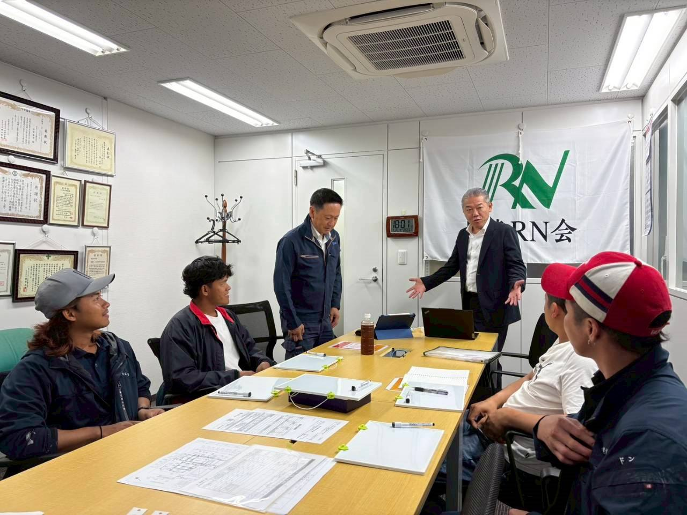
現場の安全・技術・コミュニケーションを支える「橋渡し」人材を、教育を通じて育てます。
Đào tạo nhân lực "cầu nối" hỗ trợ về an toàn, kỹ thuật và giao tiếp tại công trường.
Mencetak SDM "penghubung" yang mendukung keselamatan, teknik, dan komunikasi di lokasi kerja.
2週間に1回の授業を実施。現場で使う日本語を、現場のシチュエーションに合わせて学期ごとに学んでいます。
Các buổi học được tổ chức 2 tuần một lần. Học viên học tiếng Nhật dùng tại công trường theo từng học kỳ, gắn với các tình huống thực tế.
Kelas diadakan setiap dua minggu sekali. Peserta mempelajari bahasa Jepang untuk lokasi kerja sesuai tema tiap semester, disesuaikan dengan situasi nyata di lapangan.
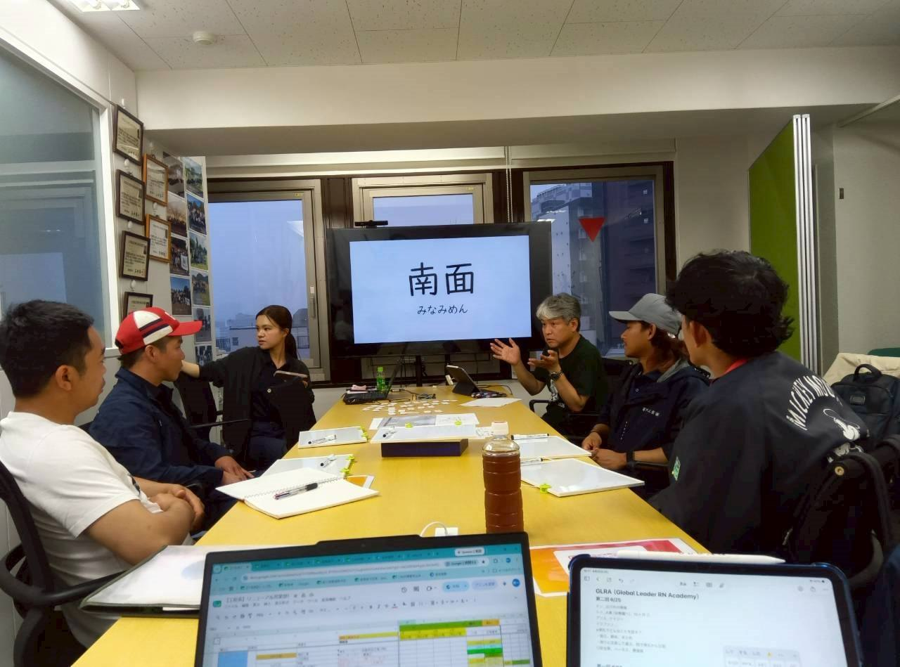
現場での1日の流れに沿って、実践的な日本語と行動を学びます。
Học tiếng Nhật và cách hành động thực tế theo trình tự một ngày làm việc tại công trường.
Mempelajari bahasa Jepang praktis dan tindakan sesuai alur satu hari kerja di lokasi proyek.
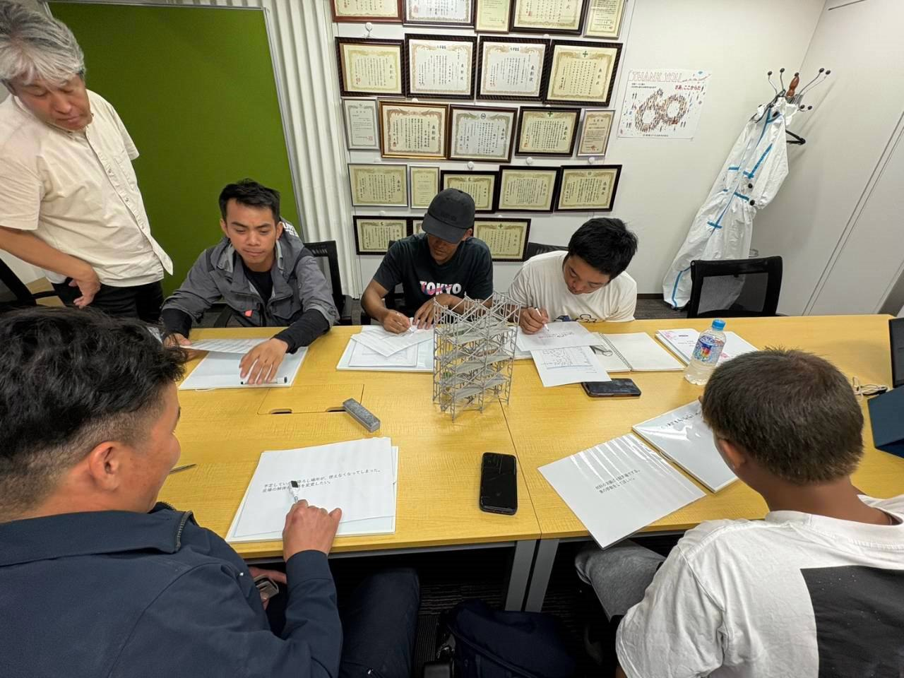
現場のリスクアセスメント事例をもとに、危険予知とディスカッションを行います。
Thảo luận và dự đoán nguy hiểm dựa trên các tình huống đánh giá rủi ro thực tế tại công trường.
Berdiskusi dan memprediksi bahaya berdasarkan contoh kasus penilaian risiko di lokasi kerja.
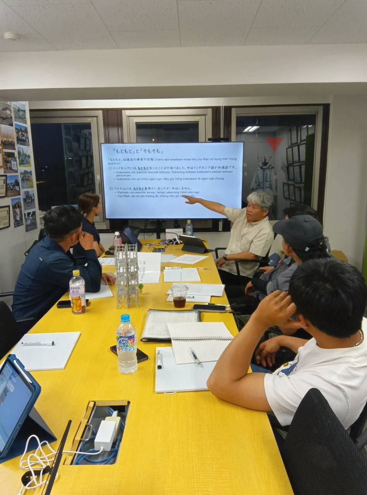
円滑な意思疎通に必要なコミュニケーション力と異文化理解力を養います。
Rèn luyện kỹ năng giao tiếp và khả năng thấu hiểu đa văn hóa cần thiết để trao đổi thông tin suôn sẻ.
Melatih kemampuan komunikasi dan pemahaman lintas budaya yang diperlukan untuk interaksi yang lancar.
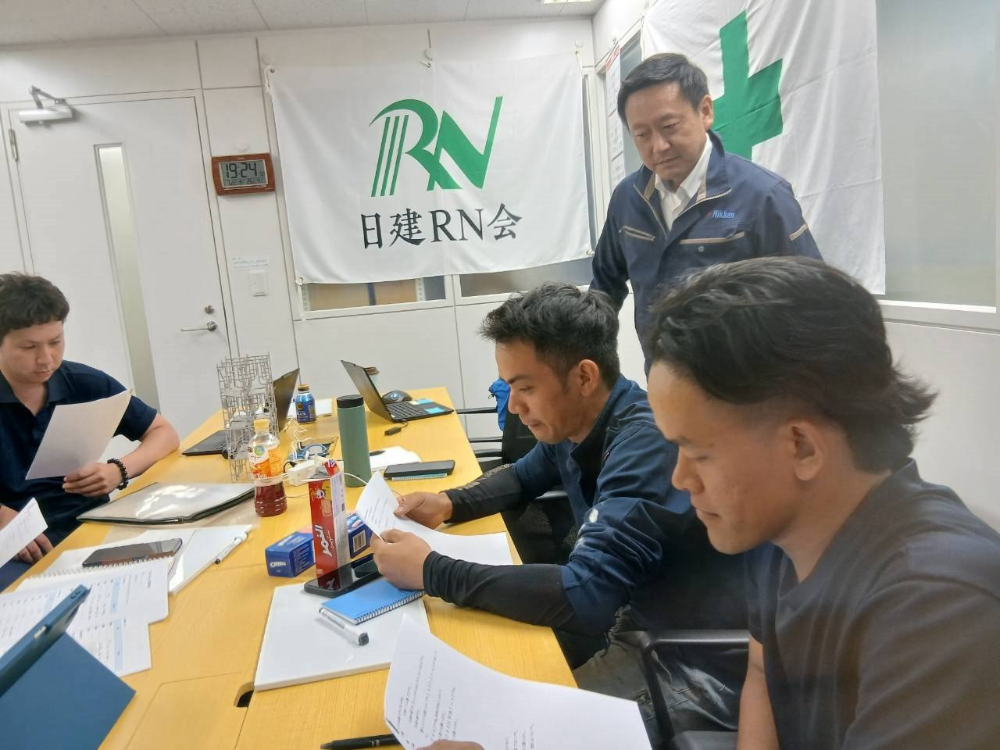
作業標準書の読み解きや、資格試験に向けた対策に取り組みます。
Học cách đọc hiểu tiêu chuẩn thao tác và ôn luyện cho các kỳ thi lấy chứng chỉ.
Mempelajari cara memahami standar kerja dan persiapan menghadapi ujian sertifikasi.
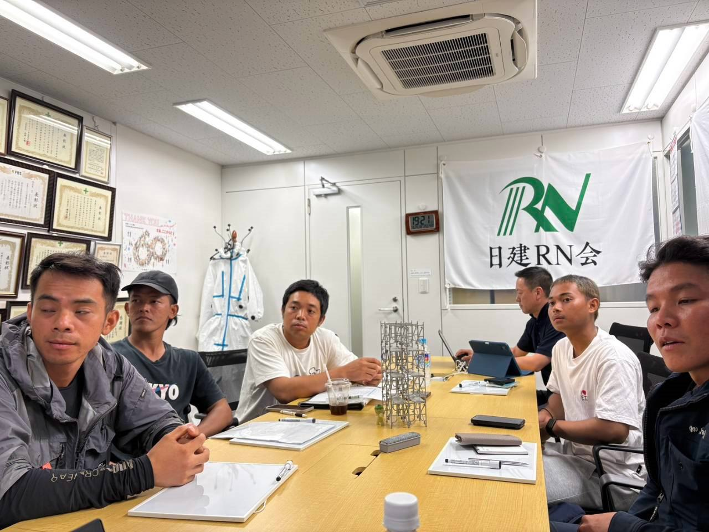
開校式から現在まで、2週間に1回のペースで授業を続けています。
Từ lễ khai giảng đến nay, các buổi học vẫn được duy trì đều đặn hai tuần một lần.
Sejak upacara pembukaan hingga kini, kelas terus berjalan rutin setiap dua minggu sekali.
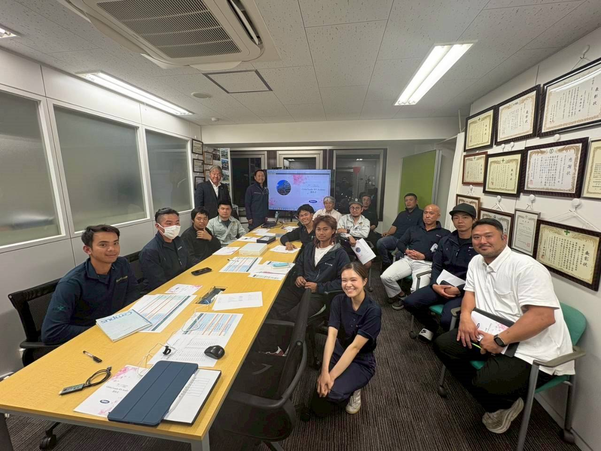
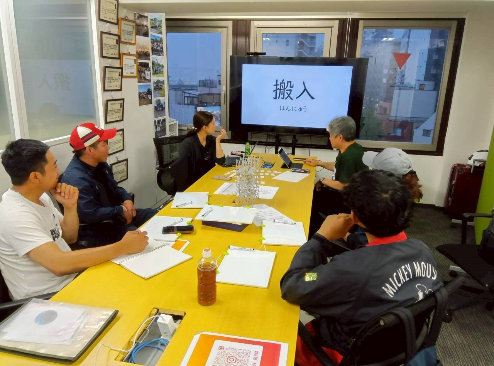
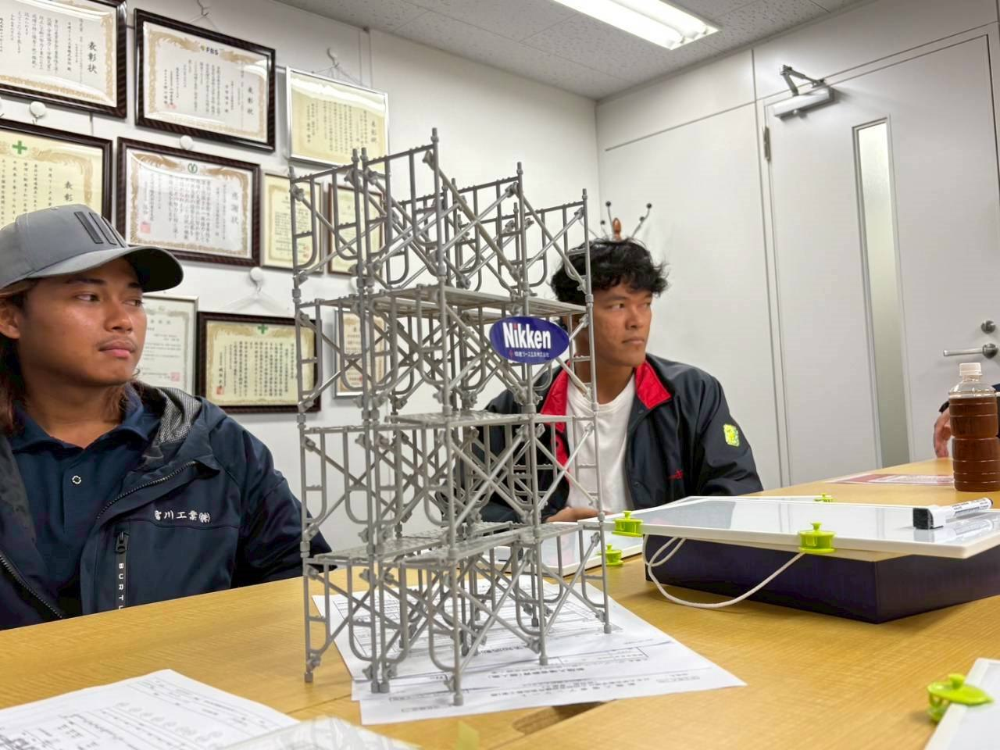
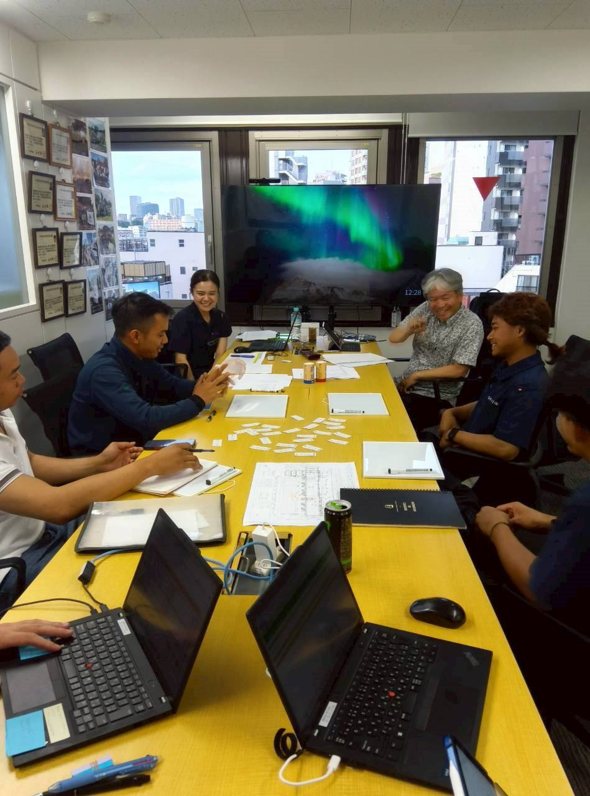
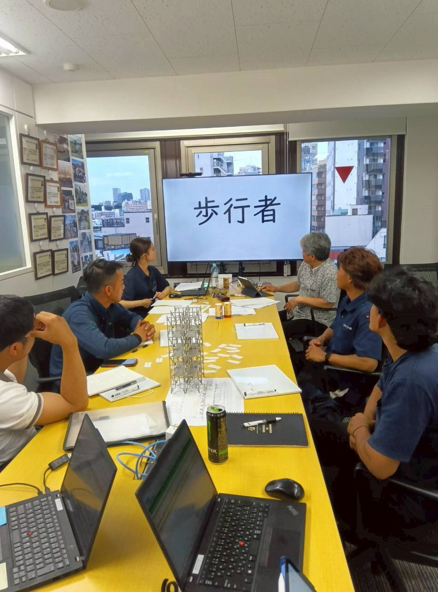
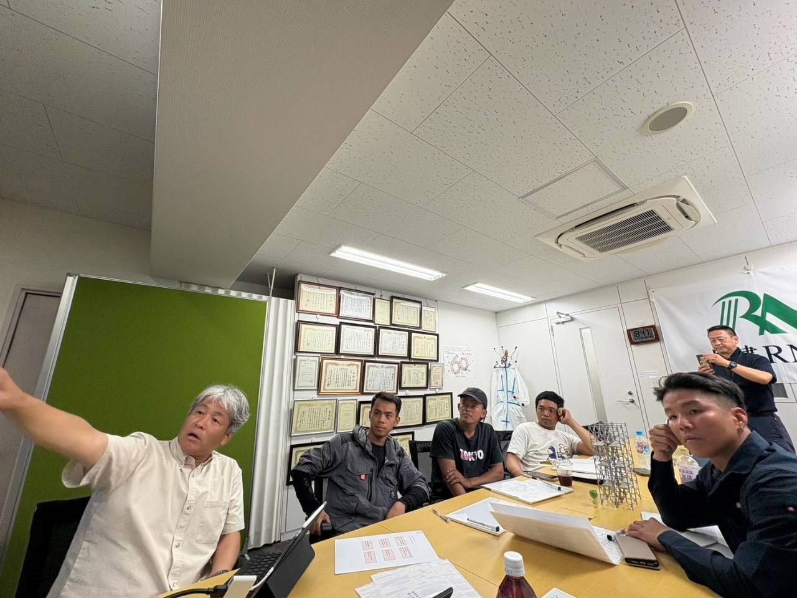
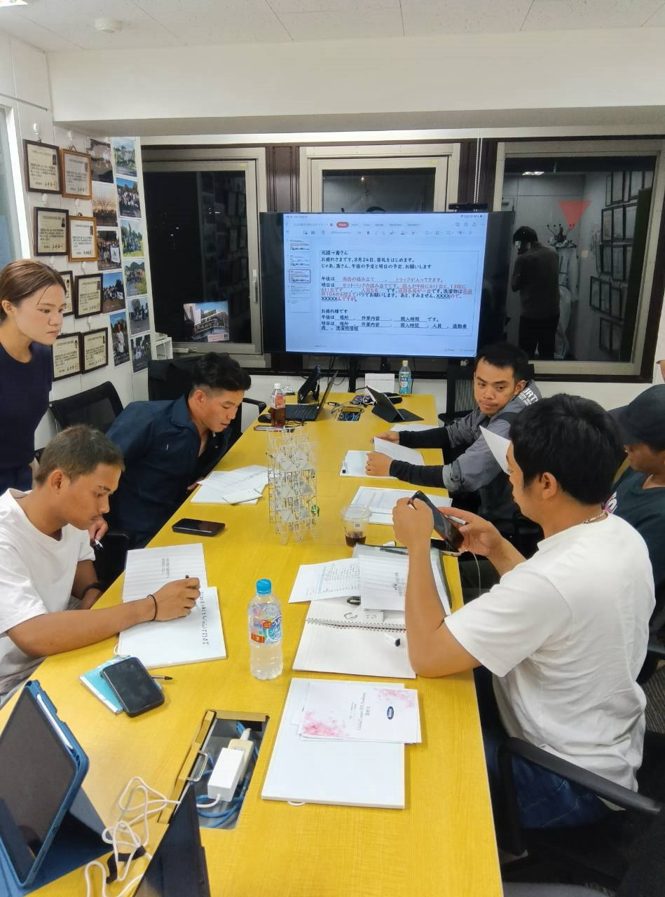
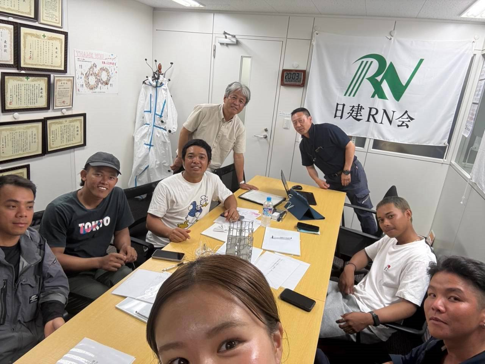
GLRNAを運営する日建リース工業 リニューアル事業部は、マンションやオフィスビル・工場・倉庫などの改修工事に使う足場を、資材の提供から施工まで担っています。
低層物件から高さ100mを超える超高層物件まで、改修工事用の足場に対応しています。
「NDシステム ダーウィン」や移動昇降式足場など、豊富な種類の足場で安全な施工を行っています。
改修現場で活躍する外国人材を職長として育てるため、2026年6月にGLRNAを立ち上げました。
Bộ phận Renewal của Nikken Lease Kogyo Co., Ltd. – đơn vị vận hành GLRNA – đảm nhận giàn giáo cho các công trình cải tạo chung cư, tòa nhà văn phòng, nhà máy và nhà kho, từ cung cấp vật tư đến thi công.
Đáp ứng giàn giáo cho công trình cải tạo từ nhà thấp tầng đến tòa nhà siêu cao tầng cao trên 100 m.
Thi công an toàn với nhiều loại giàn giáo như "ND System Darwin" và giàn giáo nâng hạ di động.
Tháng 6/2026, chúng tôi thành lập GLRNA để đào tạo nhân lực nước ngoài trở thành tổ trưởng tại các công trường cải tạo.
Divisi Renewal, Nikken Lease Kogyo Co., Ltd. – penyelenggara GLRNA – menangani perancah untuk pekerjaan renovasi apartemen, gedung perkantoran, pabrik, dan gudang, mulai dari penyediaan material hingga pemasangan.
Menangani perancah renovasi mulai dari bangunan bertingkat rendah hingga gedung pencakar langit setinggi lebih dari 100 m.
Pemasangan yang aman dengan beragam jenis perancah, seperti "ND System Darwin" dan perancah naik-turun bergerak.
Pada Juni 2026 kami mendirikan GLRNA untuk melatih tenaga kerja asing menjadi mandor di lokasi renovasi.
専門は日本語教育学・言語教育政策・地域日本語教育。元公益社団法人日本語教育学会副会長、元文化審議会国語分科会委員。現在、文化庁地域日本語教育アドバイザーを務めるほか、東京都・長野県・浜松市等の地域日本語教育に関する会議で委員・座長を務める。大学教員になる前は、日本語教育専門職として海外産業人材育成協会（AOTS）で就労者に対する日本語教育に従事。
Chuyên môn: giáo dục tiếng Nhật, chính sách giáo dục ngôn ngữ và giáo dục tiếng Nhật cộng đồng. Nguyên Phó Chủ tịch Hội Giáo dục tiếng Nhật Nhật Bản, nguyên ủy viên Tiểu ban Quốc ngữ thuộc Hội đồng Thẩm định Văn hóa. Hiện là cố vấn giáo dục tiếng Nhật cộng đồng của Cục Văn hóa, đồng thời giữ vai trò ủy viên và chủ tọa tại các hội nghị về giáo dục tiếng Nhật cộng đồng của Tokyo, tỉnh Nagano, thành phố Hamamatsu và nhiều địa phương khác. Trước khi trở thành giảng viên đại học, ông là chuyên viên giáo dục tiếng Nhật tại AOTS, phụ trách giảng dạy tiếng Nhật cho người lao động.
Bidang keahlian: pendidikan bahasa Jepang, kebijakan pendidikan bahasa, dan pendidikan bahasa Jepang berbasis komunitas. Mantan Wakil Ketua Asosiasi Pendidikan Bahasa Jepang dan mantan anggota Subkomite Bahasa Nasional pada Dewan Kebudayaan. Saat ini menjabat sebagai penasihat pendidikan bahasa Jepang komunitas pada Badan Kebudayaan, serta menjadi anggota dan ketua rapat pendidikan bahasa Jepang komunitas di Tokyo, Prefektur Nagano, Kota Hamamatsu, dan daerah lainnya. Sebelum menjadi dosen, beliau berkarier sebagai tenaga ahli pendidikan bahasa Jepang di AOTS, mengajar bahasa Jepang bagi para pekerja.
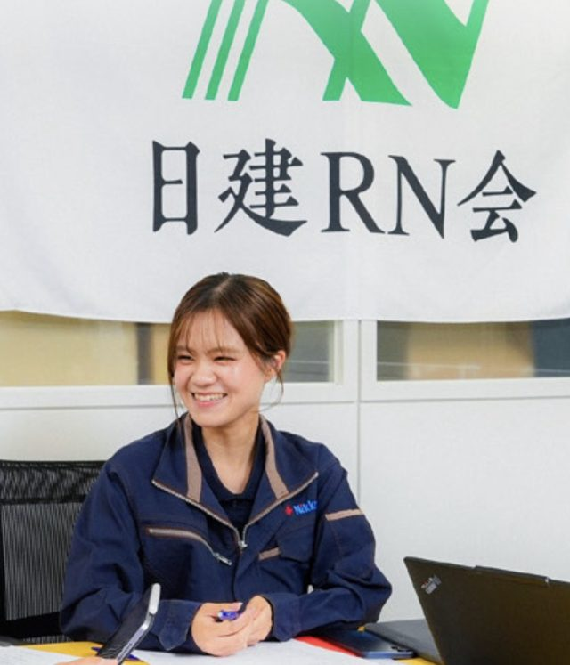
職長は、作業員を直接指揮する現場の最前線のリーダーです。労働人口の減少や制度の変化が進むなか、私たちはこれから、外国人の方にもこの役割を担ってほしいと考えています。
目指しているのは、現場の日本人と外国人の間に立つ「橋渡し」役を担う人材を育成することです。検討と打ち合わせを何度も重ねて準備し、5名の特定技能外国人の受講生が集まり、GLRNAがスタートしました。
言葉や文化の違いから、伝えることの難しさを感じる場面はまだあります。それでも、技術に強い関心を持ち、積極的に質問してくれる受講生の姿に確かな手応えを感じています。
授業の様子や受講生とのエピソードは、noteとInstagramで発信しています。
Tổ trưởng là người lãnh đạo tuyến đầu tại công trường, trực tiếp chỉ huy người lao động. Trong bối cảnh dân số lao động giảm và chế độ thay đổi, chúng tôi mong muốn người nước ngoài cũng sẽ đảm nhận vai trò này.
Mục tiêu của chúng tôi là đào tạo những nhân lực đảm nhận vai trò "cầu nối" giữa người Nhật và người nước ngoài tại công trường. Sau nhiều lần thảo luận và chuẩn bị, 5 học viên người nước ngoài có tư cách Kỹ năng đặc định đã tham gia và GLRNA chính thức khởi động.
Vẫn có những lúc chúng tôi cảm thấy khó truyền đạt do khác biệt về ngôn ngữ và văn hóa. Tuy vậy, khi thấy học viên quan tâm sâu sắc đến kỹ thuật và tích cực đặt câu hỏi, chúng tôi cảm nhận được kết quả rõ rệt.
Hình ảnh các buổi học và câu chuyện cùng học viên đang được chia sẻ trên note và Instagram.
Mandor adalah pemimpin garis depan di lokasi kerja yang langsung mengarahkan para pekerja. Di tengah berkurangnya angkatan kerja dan perubahan sistem, kami berharap tenaga kerja asing juga dapat mengemban peran ini.
Tujuan kami adalah mencetak SDM yang mengemban peran "jembatan" antara orang Jepang dan orang asing di lokasi kerja. Setelah berkali-kali berdiskusi dan bersiap, 5 peserta asing berstatus Pekerja Berketerampilan Spesifik (Tokutei Ginou) berkumpul dan GLRNA pun dimulai.
Masih ada saat-saat kami merasa sulit menyampaikan sesuatu karena perbedaan bahasa dan budaya. Namun, melihat peserta yang sangat tertarik pada teknik dan aktif bertanya, kami merasakan hasil yang nyata.
Suasana kelas dan cerita bersama peserta kami bagikan melalui note dan Instagram.
最新情報はSNSで発信しています。ぜひフォローしてください。
Chúng tôi cập nhật thông tin mới nhất qua mạng xã hội. Hãy theo dõi chúng tôi!
Kami membagikan informasi terbaru melalui media sosial. Silakan ikuti kami!
ご質問・お問い合わせは以下のメールアドレスまでお気軽にご連絡ください。
Nếu có câu hỏi hoặc yêu cầu, vui lòng liên hệ qua email dưới đây.
Jika ada pertanyaan, silakan hubungi kami melalui email di bawah ini.